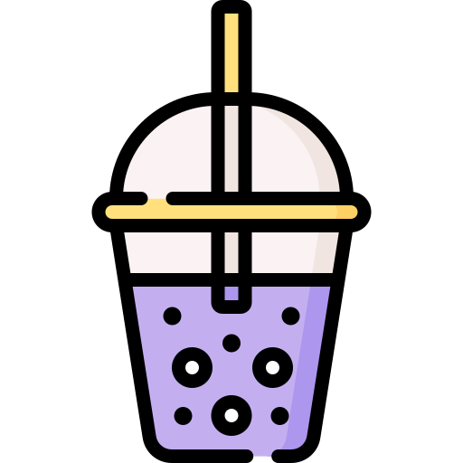

Practica Iconos
Los iconos son imagenes que pueden integrarse en una página de varias maneras. Los iconos están disponibles en formato PNG, SVG, CSS, PDF, EPS, como fuente, y en otros formatos vectoriales.
Etiqueta img
Una de las formas es insertarla en el html con la etiqueta "img" como una imagen normal.
podremos usar una imagen que tenegamos en nuestro equipo 
<img src="./bubble.tea.png" style="width: 2.5rem">
O usando la url

<img src="https://cdn-icons-png.flaticon.com/512/4645/4645861.png" style="width: 2.5rem">CSS
La podemos incluir en el css
<div style="background-image: url('https://cdn-icons-png.flaticon.com/512/4645/4645861.png');
background-size: contain; height:4rem; width:4rem ; border: 2px solid black; "> </div>Iconos Google Fonts
Con google Fonts podemos usar más de 900 iconos de tipo texto que forman parte de una unica fuente tipografica. Este tipo de iconos al ser fuentes son faciles de modificar con css pero siembre van a ser del mismo color.
¿Qué son las fuente de iconos? https://www.arsys.es/blog/programacion/fuente-iconos/
Tutorial google inconos https://google.github.io/material-design-icons/
El método más sencillo para usar esta fuente es incluir el CDN en el header de nuestra pagina web.
<link rel="stylesheet" href="https://fonts.googleapis.com/icon?family=Material+Icons">Incorporar íconos es facíl. He aquí un pequeño ejemplo:
<i class="material-icons">face</i>Para poder cambiar de icono en este caso tendremos que cambiar la ultima palabra por la que referencie al icono deseado
Ejemplos poniendo "home", "thumb_up", "star_rate" ,"computer"
Poniendo un poco de estilo nuestros iconos
home.icono_modificado{
color: red;
font-size: 3em;
text-shadow: 2px 2px 5px black;
} Iconos Boostrap
El CND de Boostrap para poder usar iconos es:
<link rel="stylesheet" href="https://cdn.jsdelivr.net/npm/bootstrap-icons@1.5.0/font/bootstrap-icons.css">
Un ejemplo de como se inserta un icono:
<i class="glyphicon glyphicon-cloud"></i>
aqui podemos encontrar iconos: https://www.tutorialrepublic.com/bootstrap-icons-classes.php
Se puden coloar donde queramos por ejemplo dentro de un botón: